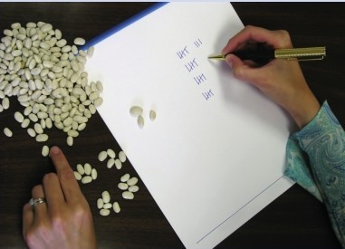
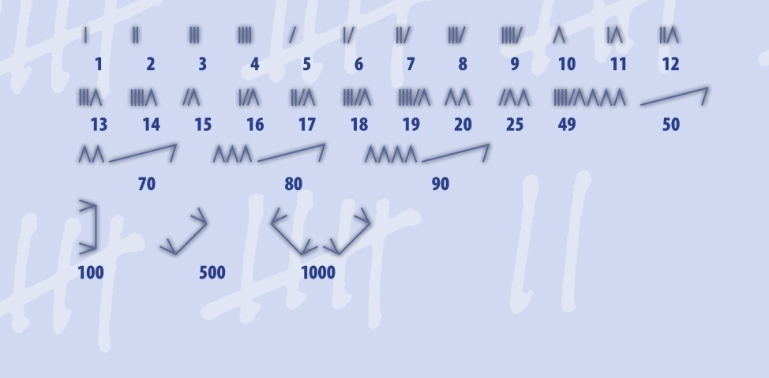
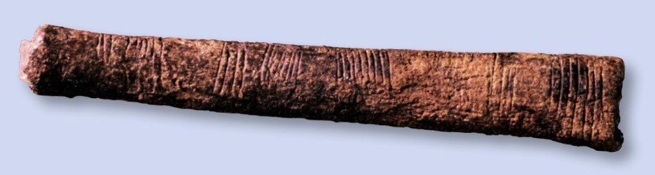
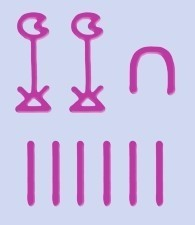
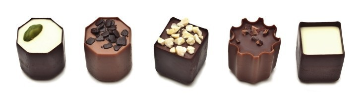
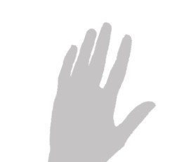
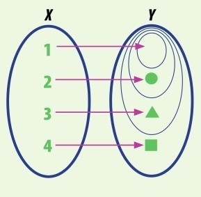
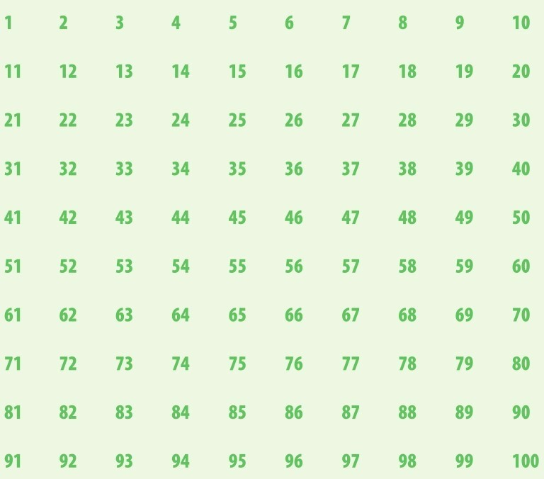
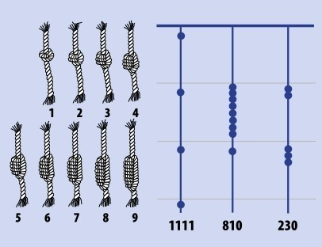
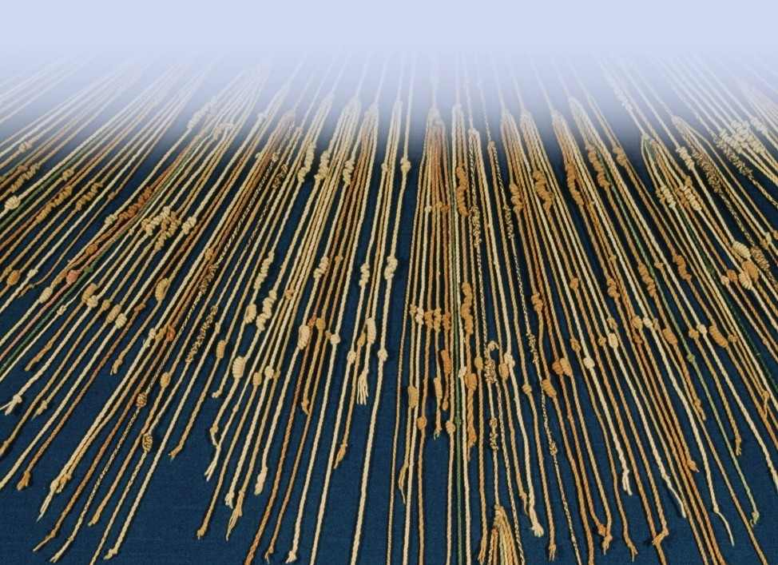

1，2，3，4，…，你知道后面是什么吗？数数是第一堂数学课的内容。我们幼年学习的数字将会伴随我们终身。但是数字从何而来？是我们发明了它们，还是数字本身就存在？

画1计数，这就是计数符号的思路。
数数的话，你只需知道数字1就行了。数学家称这个特殊的数为“单位”，它表示一个事物。其他的数就是把1累加：2就是两个1，3就是3个1，以此类推。这倒很简单，简单到科学家相信即使是动物也能数少量的数，或者分辨小量级的区别，比方说它们知道4比3大（见第13页）。对于记住哪儿食物多，哪儿食物少，它们还做得更好呢；它们懂得“更多”与“更少”的概念，而用不着比较确切的数字。有些鸟儿尤其擅长数数，它们受到训练，鸣叫指定的几声后停下来，就能得到投食奖励。

最初的数字，或者说数字符号，就是计数符号。俄国西部莫克沙河的人直到20世纪都在用类似计数符号的数字。我们由此得知古人是如何书写数字的。
全部手指（还有脚趾）
关于数字，还有个词叫“数码”。如今，我们用“数码”来描述各种各样的计算系统。最初，它也就只是用于计数。“数码”另有个意思是手指（或脚趾）。语言学家表示：数词，尤其是“十”和“百”，本源是来自古语里的“手指”。这就证实了我们的猜想：古人掰手指计数。我们有10个手指，所以“10”这个数对于构建数字特别重要（见第17页）。掰手指数到10很容易，但是再往大了数，并且写下来，我们的祖先用了另一套系统--计数符号，并沿用至今。
石头
最初的计算器——石子。
古人也有计算器，“calculate”和“calculator”都源自拉丁文中的“calx”，是“石头”的意思。小石子或者卵石，是“calculi”，在古代用于计数。每天早上牧人用一堆石头点数——一羊一枚。如果到晚间，石头数和羊数对不上了，牧人就知道他得出去找几只羊了。
计数符号
最古老的计数符号是刻在骨头上的。在非洲和欧洲，人们发现了一些骨头样本， 30 000年前的人类在上面刻了线条。它们看起来跟如今的计数符号很像。但是古代的符号记了些什么呢？

中部非洲的伊尚戈骨头，距今超过20 000年，展现了计数符号的集合。
便利计数
计数符号用起来很便利，可以用来给竞技游戏计分，数一堆类似的东西，记录一串随时间变动的数。正如我们所见，在符号上加一画就行了。但是问题来了，到底画了几道，这可很难确定。把画的这些道整合起来有许多办法，最常见的是用第5画串起前4画。这个符号表示5（比方说，5根手指）。然后你可以继续画6、7、8、9，再画一道串起来表示10。计数符号用起来很方便，画好的符号可以转化成数或数字符号，比方说53或691。然而，我们的数字系统可是经历了好几百年才发展起来的（见第21页），而且或许也是从简单的计数符号产生的。
计数
雕有计数符号的古代甲骨依然是个谜。比方说下图的伊尚戈骨头，包含成双倍的数，比如3道和6道，4道和8道，等等；也包含素数（见第58页），比如5、13、19。这块骨头看来并不是简单的家庭财产或家族人口的数量记录。反之，数学家认为它用于计算，还可能是相当复杂的计算。不过大家都不清楚是怎么算的。无论如何，伊尚戈骨头和诸如此类的骨头告诉我们，在数学刚开始产生时，数字就是一堆笔道，或者说，一堆1的组合。
1
一画
10
足跟骨
100
盘绳
1000
莲花
10 000
弯指
100 000
青蛙或蟾蜍
1 000 000+
举手的人
保存记录
数百年后，文明出现于世，伴生着法规、军队和城池。法律条例，税务文书，物主是谁，价值几何，均需落笔记录。为此，人们发明了书写，包括新的数字系统，其中为大数设定了新的符号。从古埃及、中国到罗马的数字系统，皆可上溯至计数符号。

古埃及象形文字使用如上的数字，1就是一画。右图这个粉色数字就是2016！
一瞥

对于4这个数，我们的大脑不用具体数也能立刻认出来。对于5以上的数，我们的大脑依然能快速数出来，不过是三三两两加起来的。

试试看。盖住一颗巧克力，你能看到几颗？露出最后一颗，一共是几颗，这个你得多花点工夫来数吧？
自然数
我们用一组数字来计数，它们被称为自然数。自然数包含0及其以上的全部整数。自然数（X）就是用它计数的物品的个数（Y）。自然数包含1，但是可以有任意大小的各种集合：有两个自然数的集合就对应有两个物品的集合，有3个自然数的集合就对应有3个物品的集合。下图就有100种这样的集合，你能找出来吗？显而易见吧，但是有些集合你可是数不出来的哟（见第152页：无穷大）！


结绳计数
古代美洲文明是用绳结来计数的。秘鲁的印加文明没有书写系统，但是用奇普（quipu）记录数字。每个奇普是一串绳结，包括1000种不同的花样。这些奇妙的绳结历经16世纪西班牙入侵，只有少量留存下来。奇普记录的是日期和资源，有人认为奇普也用来记录其他重要的东西，比如建筑蓝图、历史和宗教仪式。

奇普用一长串绳结表示1到9，用绳结的位置表示它是十、百、千或者更多。
参见：
▶零，第30页
▶集合论，第160页
